IntentFlow：用检索意图统一图文候选、表征与重排
IntentFlow: An Intent-Driven Real-Time Multimodal Search System with Image–Text Queries at Xiaohongshu 由小红书 Dongjia Zhao、Yuchen Ma、Chunsheng Shi 等提出，前三位作者共同一作。论文于北京时间 2026 年 11 月 16 日 11:17 首次提交，是工业多模态搜索系统技术报告。本轮阅读和图表核验日期为 2026 年 11 月 18 日。论文入口：arXiv:2611.20448。本轮未核验到独立代码或项目页；以下实验数值均来自原论文，没有重跑训练或线上实验。
图文请求的相关性取决于用户想找什么，视觉或主题相似本身不足以判断候选是否满足请求。仅重排视觉检索结果无法补回初始候选中缺失的意图相关内容，因此候选召回与重排需要遵循一致的相关性标准。
1. 背景和问题
小红书的同一份图文笔记库既承载看图找物，也承载生活经验和知识查询。用户上传一张白色上衣图片，输入“找相似款”“怎么搭配”“怎样清洗”，在主题和视觉对象不变时，所需结果已经不同。找同款需要识别具体款式或被请求允许的替代品；搭配需要候选真的展示穿搭组合；清洗则需要适用的材质与操作信息。只把图片映射到邻近向量，容易返回外形接近但没有答案的笔记；先用视觉检索取一个有限池，再交给强重排模型，也受这个池的覆盖率约束。没有进入池的清洗说明，后面的模型再会推理也无法选择。
论文因此把意图定义为“要取得的结果，以及证明该结果需要的证据”，而不是商品类目或主题标签。一个包可以属于商品搜索、穿搭示例或护理问答；反过来，寻找可迁移的经验可以跨包、鞋或手表出现。这个区分使意图有资格参与相关性标注：视觉相似度不是对所有请求都适用的统一真值。对于材料护理，另一款商品的经验可能更有用；对于精确型号，另一款再相似也可能不满足请求。该系统要解决的是如何把这种条件性贯穿整个检索链路，让上游表征有机会召回下游判据真正认可的内容。
任务以区域为基本单元。查询由参考图像、文字请求和区域框组成，区域框由已有检测器初始化，用户也可调整或选全图。文档侧包含笔记图像、标题正文和检测器产生的候选区域。索引单元与源笔记保持关联，最终返回给用户的是笔记。因此，“生产索引约百亿条”描述的是区域关联文档单元的规模，不能不加区分地写成百亿个唯一笔记、百亿个用户或百亿次查询。区域的作用是指定视觉焦点，文字和周边图像再补充目标与限制；目标不一定就是裁出的孤立物体，穿搭关系与经验适用性仍需图像上下文和正文。
意图体系有三个一级类别和七个二级类别。视觉搜索下有物品搜索、图像搜索、属性变体搜索和穿搭；信息寻求下区分针对指定目标的信息和可跨对象迁移的信息；第三类是不明确意图，在两级中均有对应标签。物品搜索可以要求精确同款，也可以允许查询明确许可的替代品；图像搜索找的是视觉资产本身，如原图或满足分辨率要求的版本。属性变体要求改变指定属性同时保持其他关键特征，不能仅因为颜色相同就满足。穿搭要求候选传达组合关系。信息寻求又必须检查文字是否提供答案，不能将“出现了同一个物体”视作已经回答问题。
这套层级并不自动给出全部相关性，完整请求还决定具体对象、允许替代范围和明确约束。可迁移信息不是不检查对象，而是检查知识成立的条件：皮质表带耐用经验可以跨手表型号，前提是材质、使用与护理条件适用；如果经验来自完全不同材料，只共享“表带”这个词仍不够。针对指定花卉的护理则必须对应目标花种。对不明确意图，短文本或陌生词本身也不能直接触发该类，必须是图文组合确实没有建立可操作的检索目标。它是查询级不确定标签，并不是相关性分级中的第四个等级。
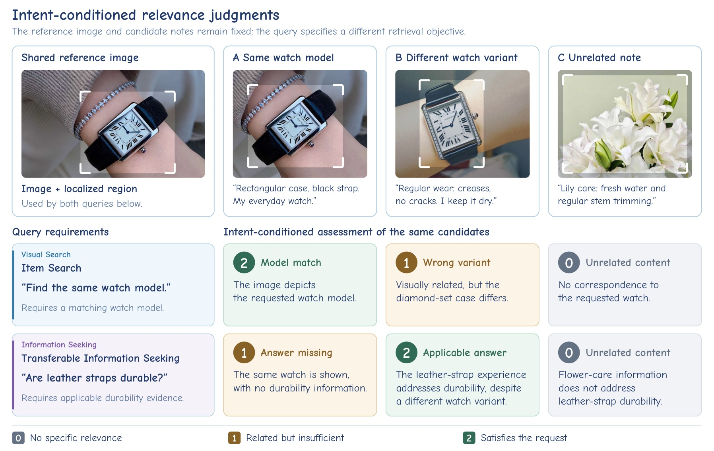
Figure 3 把条件相关性的差异放在一个可直接比较的例子里。参考图和候选集合固定：A 是同一手表型号，却只讲外观；B 是另一个变体，但描述皮表带日常使用后起褶、没有开裂及保持干燥的经验；C 是花卉护理。当请求是找同型号手表时，A、B、C 分别为二、一、零级。二级表示满足请求，一级表示有具体关联但关键条件不足，零级表示没有实质相关。当请求改成皮表带是否耐用时，A 缺少耐用信息降为一级，B 具备适用答案升为二级，C 仍为零级。这里不是更换图片后获得更高相似度，而是在证据和候选不变时，仅改变请求就改变正确顺序。
这个例子还说明为什么不能把一级当作干净的无关负例。A 对耐用性问题保留正确对象信息，但没有答案；B 对找同款问题保留视觉关联，却是错误变体。它们都可能成为有价值的困难对比，需要模型学习“差在哪个必要条件”。图中局部框、笔记摘要和两个请求的判据共同组成判断依据，不能只抽出标签数字训练而丢掉上下文。图里的笔记片段是论文重建的示例，能够解释任务，却不是线上成功率或用户研究证据。其价值在于把标注标准写得可操作，从而为后续数据工作流和模型损失提供同一套语义。
已有检索研究已支持多模态输入组合、指令条件和细粒度相关性，本文并未声称意图相关性是全新概念。它选择的具体缺口在于社区笔记同时承载外观、经验与实用知识，而多阶段系统常沿用不同准则：召回对外形相似负责，重排却要判断请求满足。两阶段标准不一致，会把训练目标与候选资格拆开。将规则前移到数据获取和表征监督，才能在候选形成之前改变什么内容有机会被看见。这里需要区分主题覆盖和证据覆盖：许多同题材笔记并不自动增加有效答案数，反而可能挤占有限候选预算。论文的分级定义因此既是标注方案，也是对初检边界的一次重设。
与一般多模态 embedding 工作相比，IntentFlow 的研究贡献更偏向完整系统协议：首先规定何为满足请求，随后按条件构造与核验样本，再让表征、重排和服务分别实现它。论文没有声称一个更大的统一模型自然解决所有意图，也没有把 Agent 放进每次在线请求的长循环。昂贵的证据查验与教师标注主要留在离线，线上则使用较小的意图学生和相关性学生，并行执行可独立完成的 query 计算。这样的划分直接对应生产约束：候选覆盖、排序能力、文档更新成本和响应时延必须同时成立。
2. 方法
2.1 总体流程与分层意图识别
在线输入为图文及区域框，查询编码器生成一个归一化检索向量，分层意图识别器独立读取相同查询，二者并行。向量 ANN 从固定文档索引取得候选，经过候选密度校正后进入相关性重排。重排器接收原查询、候选图文区域以及预测的两级意图，输出零、一、二级标签；先按等级优先，再由已有线上策略决定同等级内的顺序。显式意图直接约束的是相关性重排，而 embedding 中的门控来自融合特征，两者不是同一个分类器或同一组离散路由信号。
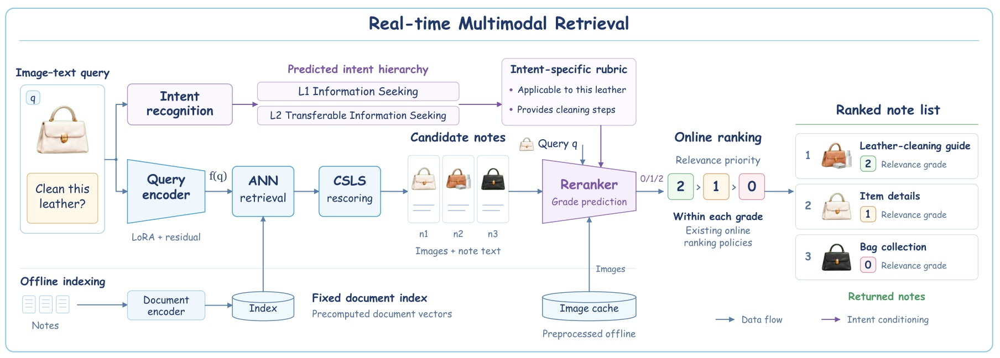
Figure 4 左侧的两个分支共享请求但没有先后依赖。意图识别不必等待 ANN 找到候选，编码器也不必先取得意图标签才能输出向量，因此并行可以避免把两个模块的耗时直接串加。中间 ANN 和 CSLS 负责候选取得与分数校正；相关性模型随后读取候选的图像、区域和文字，结合右上角意图专用判据判断是否真正满足请求。右侧的等级优先排序保留已有系统策略，意味着本文没有展示一个完全替换所有商业或个性化排序逻辑的单一端到端分数。最后呈现的列表还受到同级内策略影响，不能把线上结果全部归因于一个新的 relevance score。 图下方强调两类提前完成的工作：文档向量离线编码并建立固定索引，候选图像离线预处理后缓存。其作用不同，前者避免每次请求计算全库表示，后者减少取图、缩放及格式转换成本。图中意图箭头与数据箭头分开，也说明候选证据本身没有被意图标签替代。即使预测成“可迁移信息”，重排仍须读取材料与步骤，不能仅靠类目匹配。整个图提供了延迟分析的依赖关系，但没有给出并发实例数、QPS 或饱和吞吐；从两条分支并行只能推断关键路径结构，不能推算系统容量。 意图识别将两级标签视作短序列生成。多模态教师先给原查询打初始标签，经筛选修正后训练零点八 B 学生，采用全参数监督微调，目标只包含两级类别名称。它不是生成一长段理由再解析类别，部署时也独立于候选数。相关性的形式与两级输出可写为：
符号解释：$q$ 是图文区域查询，$d$ 是候选单元，$i$ 指二级意图，$y_i$ 是该意图判据下的候选等级；$h_\psi$ 为意图识别学生，帽子表示预测而非人工真值，$z_t$ 是目标标签序列的响应 token。最后一项概括附录的响应 token 负对数似然，提示文本不构成需要模型复写的训练目标。训练监督的意图经过离线核验，在线重排使用的是预测标签，因而分类错误会传入下游，不能用教师标签下的理想效果代替真实流水线效果。
2.2 面向请求条件的离线数据构造
离线 Agent 工作流首先复核请求意图，再根据目标与约束选择候选来源。正向路径从真实查询出发，结合点击优先的行为日志和多通道检索；反向路径利用商品属性、笔记关系构造受事实支撑的新请求，为覆盖不足的意图补样本。两者都组织成同一 query 下的对比集合，让候选只在决定性条件上产生差异。例如穿搭请求中的一条候选只有正确夹克而没展示穿搭，另一条展示穿搭但换了夹克，二者分别缺失不同条件，不能用单一外观相似阈值自动定正负。
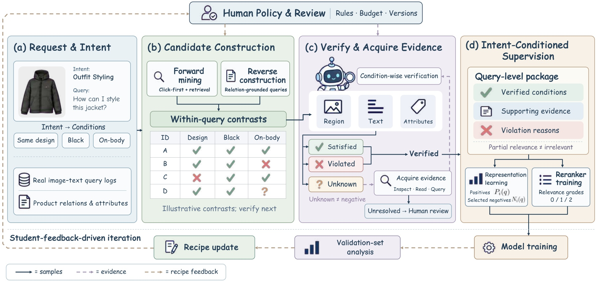
Figure 5 的四个主要模块依次对应请求及意图、候选构造、证据核验和监督产物。中间小表将设计、颜色、是否上身等条件逐列拆开，目的不是让 Agent 任意改写需求，而是定位候选究竟满足或违反了哪个已明确要求。核验时分别检查区域图、完整笔记正文和属性信息，每个条件记录为满足、违反或未知。未知会触发进一步查看区域、阅读正文或查询属性，仍未解决则进入人工审核，未决判断不进入训练监督。缺证据不等于违反条件，部分相关也不等于完全无关，这两个边界决定困难负例是否可靠。 右侧产物不只有一个最终数字，还关联已核验条件、支持证据、违约原因和源笔记身份。同一查询可以保留多个满足条件的正例，而源查询及其生成变体共享数据分区，避免简单改写跨训练验证集。底部反馈回路来自验证集按意图的表现与重复错误，用于定向追加数据，随后仍要经过同样的核验过程。它不是用测试集成绩反向挑选样本，也不是在线用户每次等待 Agent 多轮检索。上方人工策略与版本控制框表明数据准则和预算仍由人定义，Agent 执行既定证据规则。论文没有提供这套流程全部人工复核比例及单位标注成本，因此能确认机制，无法据图估算总体标注投入。 这种监督组织对模型目标有直接影响。二级相关候选形成正例集合，保留相似但违反关键条件的困难负例，同时提供三等级比较集；另有离线 embedding 教师产生候选分布供蒸馏。反向构造与多有效正例有助于突破点击日志的初始候选边界，但这也带来合成请求分布与真实流量分布的差异。论文在数据分区上作了源身份约束，尚不足以证明教师判据没有系统偏差；迁移到另一业务时，应保留条件和证据记录，否则只复制一个标签会丢掉最有价值的可审计性。
2.3 多模态表征、分级排序与固定文档空间适配
共享多模态骨干在最后一个有效 token 取融合特征，query 与 doc 使用不同投影映射到一百二十八维，并归一化后用点积检索。融合隐层为一千零二十四维，输入均保留指定区域、周边图像和文字。第一阶段建立满足请求与困难反例之间的可分结构，第二阶段加入等级顺序和教师分布，生成基础模型 A。只有这个基础阶段更新文档路径并构建索引；后续适配把文档空间固定。
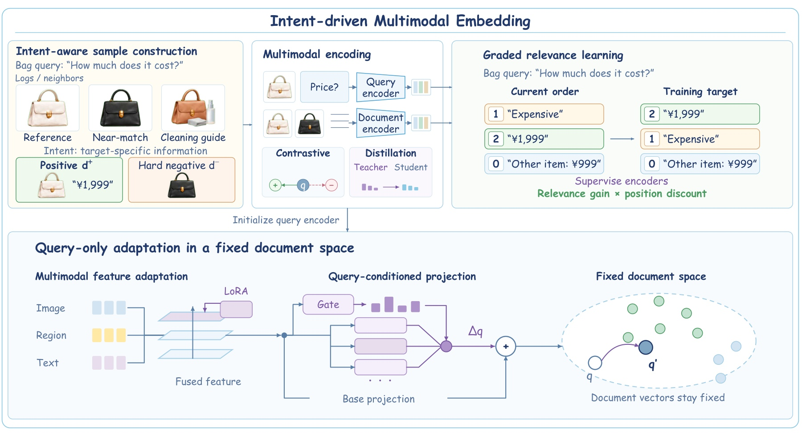
Figure 6 上半部从一个价格查询解释各项监督的差别。正确商品且给出具体价格的候选可以完全满足请求，只说“很贵”的候选仍然相关却信息不足，另一件商品的精确价格则没有回答指定目标。对比学习区分正例和相似错误，分级排序进一步要求满足者优先于部分相关者；蒸馏用教师对同一候选集的相对分数补充粗等级内部差异。图中的“当前顺序”与“训练目标”不是两套标签，而是同一候选列表在当前模型和意图判据之间的错序。三种信号因此承担不同任务，并不能简单以“都让正例更高”概括。 下半部把索引更新成本落实到参数路径。query 的全图、区域和文字经过高层 LoRA 改变融合表征，再由门控残差调整投向文档空间的方向；基础投影仍被保留，右侧所有文档向量保持不动。图里的多个残差分支不是分别输出多个 ANN 查询向量，服务仍只输出一个一百二十八维向量。门控从 query 融合特征计算，其隐含专家可以捕捉不同查询形态，却没有被监督成上述七个意图的一一对应。保留固定索引降低迭代的重编码需求，同时也限制可移动的空间：如果文档表征本身无法表达所需信息，只移动 query 未必能恢复。这是该设计换取部署便利时的结构性约束。 归一化双塔表征及额外困难负例的 query 到 doc 损失如下：
符号解释：$H_\theta$ 为共享骨干输出，$W_q,W_d$ 是独立投影，$\operatorname{norm}$ 为二范数归一化，$s_\theta$ 是检索分数。共享的是基础骨干而不是最终两个投影，归一化让点积成为余弦相似度，训练仍可在不同意图下塑造这个空间。
符号解释：$B$ 为正对数量，$d_a^+$ 为配对正例，$\mathcal C_a^D$ 与反向的 $\mathcal C_a^Q$ 是有效候选集合，身份碰撞需要屏蔽；$n_a$ 是额外负例，$v_a$ 表示其是否有效，$w(t)$ 随训练增强。反向损失是在有效 query 集中找配对 query，并没有额外负例项。温度 $\tau_1$ 从零点零七开始可学习。渐强权重只作用额外负例，不能误读为所有 batch 负例一起变权。
符号解释：$\mathcal H_a^D$ 是扩展候选中得分最高的三十个有效负例，$m=0.05$ 为间隔，$[x]_+=\max(x,0)$，反向同样取最难 query 并对双向平均得到 $\mathcal L_{\mathrm{margin}}$。$\lambda_m(t)$ 逐步增至零点二五。它强迫正例同时胜过多个近邻，和只加入一个困难负例的 softmax 分母约束并不相同。
符号解释：$r_a>r_b$ 是相邻已观测等级间需要纠正的候选对，$p$ 是当前一开始计数的排名，$L$ 为截断位置，$\mathrm{IDCG}$ 是理想排序增益；$s_a=s_\theta(q,d_a)$，$\tau_r=0.07$。等级零、一、二对应增益零、一、三，因此在其他条件相同时，二对一的满足边界权重是一级对零级的两倍。位置和交换权重在本次梯度更新中固定，对有效 query 和其 pair 数分别平均，避免多比较 query 单纯因数量更多而主导损失。训练采用分级增益，后续检索评估却只将二级当正例，二者口径不同。
符号解释：$T,S$ 分别为冻结二 B 教师和可训练零点八 B 学生，双方对同一有效候选集合计算分布；蒸馏温度为零点一，第二阶段双向配对对比温度为零点零七。KL 方向是教师到学生，不是让教师跟随学生。教师给出同等级内部的软偏好，等级损失给出明确满足顺序，两者配合但没有保证教师偏好一定符合所有长尾请求。基础阶段更新共享骨干和两个投影，之后生成的 $g_A(d)$ 才成为固定索引。 固定索引后的残差结构、query LoRA 与匹配分数为：
符号解释：$h_q$ 是经 query LoRA 适配的融合特征，$u_q=W_qh_q$ 保留基础投影；门控混合六个专家，$j$ 为两条不同瓶颈分支，瓶颈秩分别为八和六十四。残差按基础投影范数缩放后加入，再归一化，既保留原方向又允许按查询调整。六个专家不是六次检索，也不等于六个可操作意图的硬分派。
符号解释：$W_\ell$ 是冻结基础矩阵，$A_\ell,B_\ell$ 是 query 专用低秩因子，作用于最后十二层融合层的注意力输出与前馈降投影矩阵。训练同样使用第二阶段目标，梯度经过残差进入 query LoRA，文档向量不变；文档路径禁用这些适配器，线上只需一次 query 编码。
符号解释：$\mathcal N_Q^k(d)$ 是文档在训练 query 参考库中的最近十个 query，$K_c$ 为最初重评分的五百候选。对同一当前 query，标准 CSLS 的 query 密度项是所有候选共享常数，可从排序中去掉；文档项针对适配后的 query 模型离线计算。它只重排已有候选，不扩大候选集合，无法直接找回 ANN 阶段未返回的文档。
2.4 意图条件重排与低开销服务
重排学生接收 query、候选的图文区域及两级意图，用意图专用规则输出等级。两位教师独立给等级和证据解释，等级一致则采用，不一致由第三位教师裁决；学生全参数监督微调只学习相关性标签响应，教师长解释不作为目标。这个设计把昂贵的多模型推理放在离线数据端，线上用零点八 B 学生完成紧凑分类。其响应 NLL 与意图学生形式一致，但条件增加候选及意图，目标是等级 token，而不是两级标签序列。
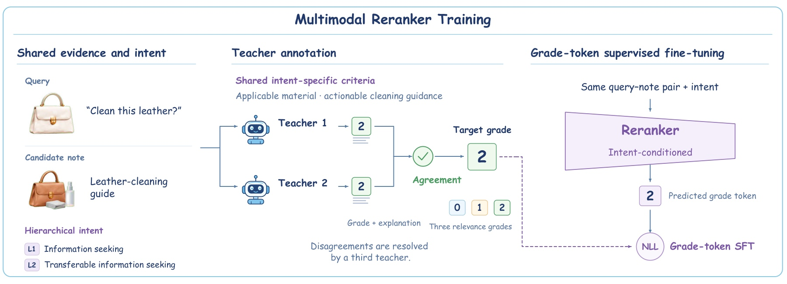
Figure 7 左侧保留原始图文证据和显式意图，避免把“清洁皮质材料”缩成一个没有适用条件的类别字符串。中间两位教师分别判断，如果都认为候选满足材料适用性并给出可执行步骤，就形成二级标签；分歧交给第三位教师，而不是简单取平均数字。右侧学生读取同一对证据和意图，优化标签 token 的负对数似然。教师解释用于标注判据与裁决，学生目标不包含它，因此这里不能写成推理链蒸馏，也不能假设上线时输出了可供用户审计的完整理由。离线教师质量最终限制学生，多个教师一致也不是人工真值的保证。 服务阶段又有两个常被忽略的边界。首先，意图标签是识别器预测的，相关性学生仍对每个候选做判断，不能靠把理想意图作为隐藏输入高估生产结果。其次，零、一、二级只规定大等级顺序，同一级内继续服从现有线上排序策略，所以预测校准会影响有多少候选进入最高优先级，却没有直接决定每一个结果的最终位置。图像缓存通过历史回填和持续增量更新准备缩放及格式化后的图片，缓存缺失才回源处理并补入。论文把这一点作为尾延迟控制手段，但没有提供缓存命中分母、冷启动比例和不同负载的曲线；不能仅根据流程宣称回源开销被完全消除。
3. 实验结果
3.1 用户级线上实验与意图识别
线上实验在小红书多模态搜索按用户分流，对照是视觉候选检索后重排的既有生产系统。表中两个实验配置是累计添加组件：第一组同时加入意图识别和条件重排，第二组在第一组基础上再加入多模态检索。所有数字均为相对同一对照的百分比变化，按实验指标除以对照指标减一计算。Top-4 QCTR 的分母是发起的查询，事件是前四条至少点击一篇；QCTR 则是任意位置至少点击一篇。它们都不是以展示条目为分母的 item CTR，也不告诉我们每次查询平均点击次数。
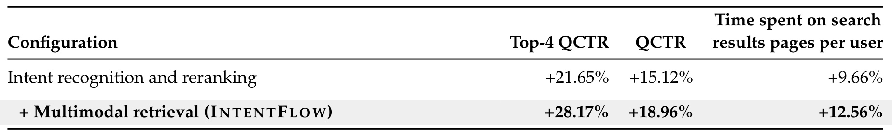
Table 1 第一行的意图识别加重排，使前四位查询点击率相对提升百分之二十一点六五，全列表查询点击率提升百分之十五点一二，每用户结果页累计停留提升百分之九点六六。加入多模态召回后，对同一生产对照的相对变化分别为百分之二十八点一七、百分之十八点九六和百分之十二点五六。这支持“只改重排已有收益、补上意图匹配候选后整体更好”的系统判断。表里没有单独关闭意图识别但保留重排的交叉组合，因而不能分离意图识别与重排各自贡献，也不能把第二行全部收益当作召回模块独立效果。将两行相减得到的六点五二，是两个相对提升数之差，不是实际 Top-4 QCTR 增加六点五二个百分点。
若额外假设两个配置与同一数值对照严格可比，可以由比值算出第二组相对第一组约百分之五点三六的 Top-4 QCTR 差异，但原表没有为这个派生对比提供单独检验；本笔记不把它标成作者给出的独立因果效应。每用户停留统计的是评估期在结果页累计时间，也不能直接翻译为每次查询耗时或停留越久越满意。论文未报告实验起止日期、各组用户数、流量占比、绝对指标和置信区间，这些缺口影响我们判断收益稳定性、统计功效和适用业务切面。能够确认的是作者报告了用户级实验与相对收益，不能补写完整上线验收结论。
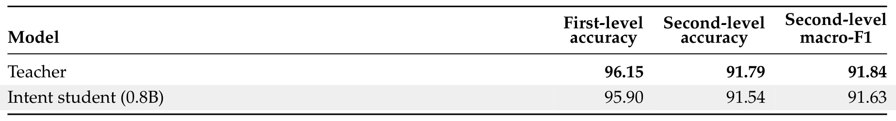
Table 2 使用三百九十条人工标注意图查询，意图学生训练集为二万六千七百六十七条。零点八 B 学生的一级准确率百分之九十五点九零、二级准确率百分之九十一点五四、二级宏 F1 百分之九十一点六三，教师分别为百分之九十六点一五、百分之九十一点七九和百分之九十一点八四。这里准确率差距是零点二五个百分点，宏 F1 相差零点二一个百分点，说明在这套小规模测试中学生接近教师，而不是比所有更大模型普遍更强。二级的三十三个错误中十五个发生在针对目标的信息与可迁移信息之间，约占错误的四成五；这个边界恰好决定是否必须同一对象，错误可能令后续重排应用不合适的证据标准。总体高准确率不能掩盖这种有方向的错误。
测试量还限制了细分结论。七类宏 F1 给每类同等权重，比只报总体准确率更能看稀有类，但论文没有逐类混淆矩阵和样本分母，也未给长尾实体、短查询或错误框的切片。教师与学生共享标注体系，二者接近说明压缩后的可用性，尚不能证明这套层级覆盖所有真实请求。在复现时应先检查目标特定与可迁移两类的错判方向，再观察下游真实满意度，而不只验证两位小数的整体分数。
3.2 候选检索整体表现与按意图的反例
检索测试固定二万条独立查询，分别在五十一万二千六百五十五和一百九十万四千零五十四条笔记 gallery 上比较。测试查询不进入训练，生成变体按源分区。只有二级“满足请求”候选计作正例；Hit@K 是至少命中一个正例的查询比例，Recall@100 则对每个查询的正例覆盖率求平均，不能与跨查询累计正例关系的 micro recall 混用。NDCG@10 在评估时使用二级正例的二元增益，和训练损失中的零、一、三分级增益不同。以下同一个表内差异可比较，不能直接用来预测百亿索引生产召回率。
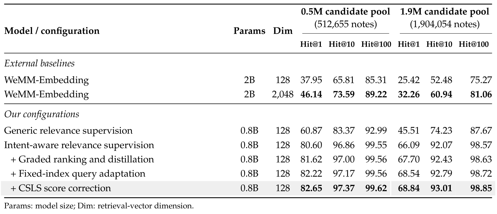
Table 3 的外部基线是 WeMM-Embedding 二 B，分别截取前一百二十八维和保留完整二千零四十八维后归一化，底层模型不变；附录还验证其他维度。较大 gallery 中，两种 WeMM 配置 Hit@1 为百分之二十五点四二和百分之三十二点二六，内部零点八 B 模型的通用监督基线为百分之四十五点五一。仅把相关性规则改为意图条件标准、保持数据构造工作流和训练条件匹配，达到百分之六十六点零九。这个内部对照更能支持监督准则有价值，因为外部模型还存在训练数据、任务对齐和架构差异，不能将其全部差距归因于模型更小或意图标签单一因素。
随后三行是累计优化：分级排序与蒸馏令大 gallery Hit@1 到百分之六十七点七零，固定索引 query 适配到百分之六十八点五四，再加 CSLS 到百分之六十八点八四；对应 Hit@10 为百分之九十三点零一、Hit@100 为百分之九十八点八五。小 gallery 最终 Hit@1 是百分之八十二点六五。这组数据既展示组件增益，也说明 gallery 扩大后首位判断更难，虽然 Hit@100 仍很高。它不是首位精度接近百分之百，也不是所有多模态搜索任务的统一最佳成绩。WeMM 在同一测试集用精确内积搜索，不能把外部差距简单解释成 ANN 算法误差；生产 ANN 的近似损失和线上候选处理仍需另测。
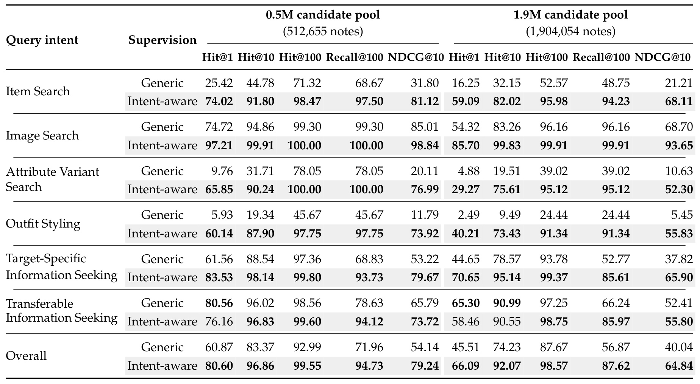
Table 4 最有解释力的是收益分布并不均匀。大 gallery 中，物品搜索 Hit@1 从百分之十六点二五到百分之五十九点零九，属性变体从百分之四点八八到百分之二十九点二七，穿搭从百分之二点四九到百分之四十点二一，说明“相似却缺关键条件”的样本准则对这些任务尤其关键。针对目标的信息查询，Recall@100 从百分之五十二点七七到百分之八十五点六一，NDCG@10 从百分之三十七点八二到百分之六十五点九零。总体 Recall@100 从百分之五十六点八七到百分之八十七点六二，提高三十点七五个百分点；但这个总体数值来自意图监督与通用监督的受控第一阶段比较，不是所有后续组件和重排叠加的最终线上结果。
可迁移信息查询暴露了覆盖与首位排序的分离：Recall@100 提高，Hit@1 却下降。 同一大 gallery 中，该类 Recall@100 从百分之六十六点二四到百分之八十五点九七，Hit@1 从百分之六十五点三零降到百分之五十八点四六，减少六点八四个百分点；Hit@10 也从百分之九十点九九略降到百分之九十点五五，而 NDCG@10 从百分之五十二点四一小幅升至百分之五十五点八零。这意味着更多满足条件的经验进入候选深处，却没有总被放在第一位。作者以此支持分级训练与后续条件重排的必要性，但表本身不能证明后来每一个模块都解决了这个切片问题。需要同一意图下的最终分阶段曲线，才能判断总体提升有没有掩盖该类回退。
同样，小 gallery 可迁移信息 Hit@1 也从百分之八十点五六降到百分之七十六点一六。这使反例不只是较大候选集的孤立现象。它提示为知识迁移增加宽覆盖时，最相似对象与最适用证据可能产生冲突；如果标签只给“可用”，尚不足以决定多个可用答案的精细顺序。本文保留这个负例，是为了避免将“意图监督总体有效”放大成“每类每个指标都获益”。
3.3 间隔约束、等级增益、蒸馏与固定索引适配
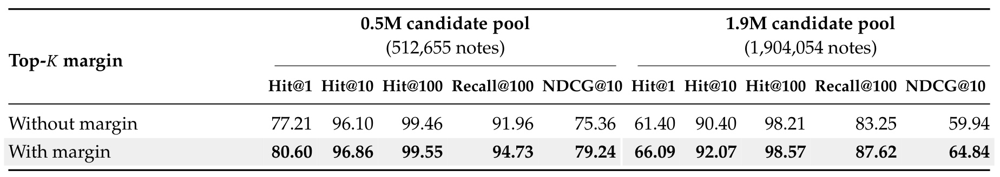
Table 5 的两个配置都已有双向对比学习和显式困难负例，差别是是否加入多个最高分负例的间隔项。因此它测的不是“有负例比没有负例好”，而是在已有负例训练上继续分离多个近邻的收益。较大 gallery 中，Hit@1 从百分之六十一点四零到百分之六十六点零九，增加四点六九个百分点；Recall@100 从百分之八十三点二五到百分之八十七点六二，增加四点三七个百分点；NDCG@10 从百分之五十九点九四到百分之六十四点八四。小 gallery 的 Hit@1 从百分之七十七点二一到百分之八十点六零，增幅三点三九个百分点。首位和覆盖同时改善，与多个混淆候选被拉开间隔的机制相符，但论文没有展示对每个被挑中的困难负例做正确性复核的统计。
间隔设置是分数差零点零五，最多选择三十个有效困难负例，权重渐增到零点二五；这些约束与归一化点积尺度相联系，不能换成未归一化打分仍机械沿用相同数字。负例构造又受意图判据控制，因此把损失搬到其他系统前，应先检查“正确对象但缺答案”“回答了问题但对象不适用”是否被一致标注。该表给出单个设置下的组件对照，没有提供三十这一数量的完整搜索曲线、不同间隔值的敏感性和相同训练成本下的收益。它足够支持此实现中的增益，不足以确定通用最优超参数。
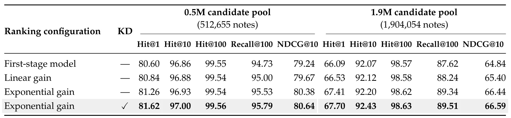
Table 6 从第一阶段模型出发，比较线性增益、指数增益以及指数增益加蒸馏。大 gallery 的 Hit@1 依次为百分之六十六点零九、六十六点五三、六十七点四一和六十七点七零；NDCG@10 则为六十四点八四、六十五点四零、六十六点四四和六十六点五九。指数比线性高零点八八个百分点的 Hit@1，符合优先强调二级满足边界的训练设计。再加蒸馏只增加零点二九个百分点，幅度小于从第一阶段到指数分级排序的变化，不能将整个第二阶段提高一点六一个百分点全部记给教师蒸馏。小 gallery 也保留相同趋势，最终 Hit@1 为百分之八十一点六二。
这张表还提供对检索指标的细微限制：Hit@100 在小 gallery 从第一阶段百分之九十九点五五到线性和指数的百分之九十九点五四，并不是每一列都单调变好；加入蒸馏后为百分之九十九点五六。近饱和的深位命中变化很小，主要收益集中在前位和正例覆盖。训练中教师提供软分布，但这不是在线多教师 ensemble，服务没有因此增加一套二 B 教师前向。论文未给相同优化步数和不同蒸馏预算的完整成本对照，也没有多随机种子置信区间，所以小幅差异应当保留数值和测量设置，不宜单凭小数排名认定稳定优越。
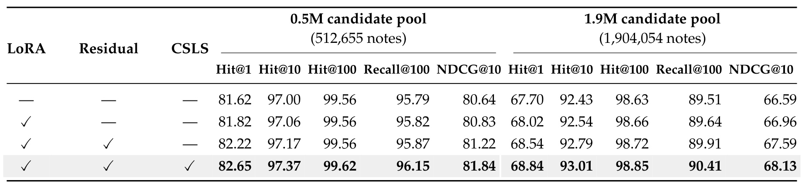
Table 7 的关键控制是所有行共享同一文档向量和索引。大 gallery 基础 Hit@1 为百分之六十七点七零，query LoRA 后为六十八点零二，加残差投影为六十八点五四，再加 CSLS 为六十八点八四；对应 NDCG@10 从百分之六十六点五九依次到六十六点九六、六十七点五九、六十八点一三。LoRA 与残差联合提高 Hit@1 零点八四个百分点，说明改变融合特征后，投影方向仍有可优化空间。加 CSLS 后 Recall@100 从百分之八十九点九一到百分之九十点四一，而 Hit@100 从百分之九十八点七二到九十八点八五；这反映对已取候选的密度校正可以影响截断位置中的正例分布。
“固定索引”在这里有清楚的可验证含义：doc embedding 没有重算，query 适配与文档特定校正产生了新分数。它并不意味着之后永远不更新文档表征，也没有证明整个检索系统完全不用刷新任何离线状态。CSLS 的文档密度项依赖适配后的 query 模型和参考查询库，模型更换后仍需重算或核验这项离线元数据。表格也只给累计路径，未提供只加残差、不加 LoRA 的所有组合，因此残差在 LoRA 后的贡献不能外推为所有初始化下的独立贡献。对工业系统而言，明确哪些大文件不变、哪些小参数和元数据需要随版本更新，比笼统说“无需更新索引”更准确。
3.4 等级预测、校准和服务耗时
相关性学生训练使用一百七十万五千七百条 query–candidate 对，由双教师一致与第三教师裁决形成标签。评估集为五千九百七十七对，先由两教师独立标注，分歧和歧义再经人工裁决。零、一、二级分别有一千一百七十七、二千五百七十四和二千二百二十六对，一级占比最高，数据不是均衡三分类。它与意图识别的三百九十条人工查询是两套评估，不应混为同一个测试集。
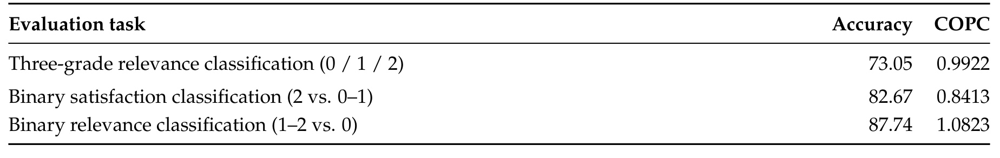
Table 8 三分类准确率为百分之七十三点零五。把二级作为正类、零一级作为负类，得到满足请求准确率百分之八十二点六七；把一二级一起作为正类，则相关性准确率为百分之八十七点七四。后二者区分的是不同决策边界，并非模型同时训练了三个独立分类器。COPC 定义为映射后参考标签均值除以预测标签均值，三分类为零点九九二二，说明总体平均等级接近，但不代表每个等级概率都校准。满足分类的零点八四一三小于一，表示平均预测满足率高于参考；相关分类的一点零八二三大于一，表示平均预测相关率低于参考。两种方向并存，恰好说明一个接近一的三分类均值可以掩盖不同边界的偏差。
最高优先级由二级候选构成，因此满足率高估可能把本不充分的笔记放入优先集合；相关率低估则可能把有部分价值的内容误入零级。论文没有给逐意图混淆矩阵、概率可靠性曲线和阈值扫描，不能由 COPC 推断个体置信度或全类校准。这里的参考标签也包含教师判断，人工主要处理分歧与歧义，而非所有样本都由纯人工盲标。对照教师体系的系统性偏差需要额外独立样本检查，不能只凭多教师裁决便认为它是无噪声标准。
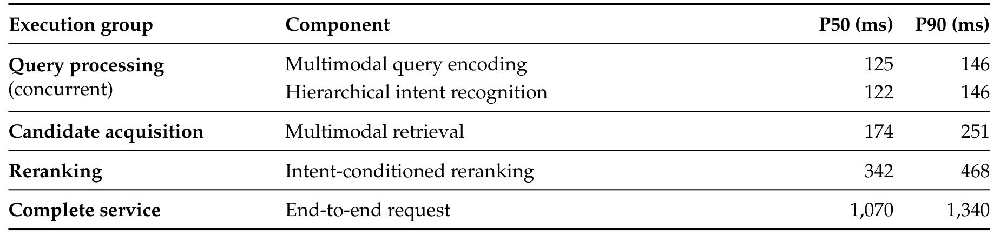
Table 9 的单位是毫秒。query 编码 P50 为一百二十五、P90 一百四十六；意图识别为一百二十二和一百四十六，两者并行。多模态检索为一百七十四和二百五十一，意图条件重排为三百四十二和四百六十八；完整服务边界为一千零七十和一千三百四十，即一点零七秒和一点三四秒。完整服务时延不是把各模块分位数求和：不同请求在各组件的相对排名不同，且还有调度、取图和系统处理路径。并行组也不能把一百二十五与一百二十二串加，再拿差值解释“未知开销”。论文只报告各测量边界的分位值，没有给请求级联合分布，无法据表恢复所有阶段的尾延迟来源。
这组监控与线上效果实验是分开采集的证据。它证明作者报告的部署服务具有该响应分布，不证明实验收益是在完全相同负载、硬件和时间窗下取得，也不提供相对旧生产服务的延迟净变化。表中缺少 QPS、并发、批大小、实例数、缓存命中率和超时率，因此无法将一点零七秒转换成每机容量，或宣称降低多少计算成本。图像缓存、紧凑标签输出和并行分支解释了为什么系统可以把多模态模块放进服务路径，但饱和情况下的排队、冷图回源和降级需要额外曲线。对推荐排序服务尤其要保留这一边界：组件更快不直接等于业务收益，已完成请求的分数机制与超时造成的间接流量效应应分别测量。
4. 总结
IntentFlow 最值得复用的设计，是把“请求需要什么证据”写成稳定规则，并让数据构造、表示学习、重排和线上排序共享这个规则。它不把更强视觉相似度当作万能相关性，而是区分目标身份、条件变体、组合关系和知识适用性。Agent 离线核验提供可追溯条件，多阶段损失把满足边界与候选内部顺序连接起来，固定 doc 的 query 适配则把效果迭代放到更易更新的参数路径中。论文的内部受控监督比较比外部不同模型对照更能说明核心机制，按意图的负例又让覆盖与首位排序的矛盾显露出来。
对推荐系统，直接启发是困难负例要保留“为什么不满足”的结构，而不是只按点击或外观邻近决定负标签。用户的明确操作目标可作为请求条件，召回若不保留相应证据，精排再强也无法补救。但无显式请求的推荐页需要另外推断或学习意图，不能照搬搜索的文字输入假设。对大模型应用，检索工具应该返回满足当前问题的证据而非同主题片段，可迁移经验尤其需要记录成立条件。这里的零点八 B 学生与离线教师分工也可用于 Agent 工具底座，尚不能据本文证明任意长链 Agent 的最终任务成功率获益。
仍有四类关键限制。第一，线上用户实验未公开日期、流量、样本量和区间，只有两组累计配置，无法完整分离模块因果贡献。第二，意图体系固定，目标特定与可迁移信息的错判占了较多错误，真实分布变动后可能需要重新定义边界。第三，教师一致标签和反向构造能扩覆盖，也可能带入共同偏差，未知样本的弃用是否让困难请求代表性下降尚无统计。第四，离线 gallery 最大约一百九十万笔记，生产区域单元索引约百亿，匹配协议与规模不同；固定文档空间的更新便利还受文档信息上限和元数据刷新约束。另需警惕满足率高估、可迁移查询首位回退，以及缺少相同负载服务成本对照。
在研究迁移层面还要区分检索工具质量与应用最终质量。本文没有单独评测多模态搜索 Agent 的整段回答正确率，界面例子也不是受控 Agent 对照。更好的检索可为回答提供证据，是否减少幻觉、提高多轮任务完成率，仍需固定回答模型、提示与工具预算后验证，不能把搜索点击收益直接写成 Agent 任务收益。
后续首先应复核意图规则和标注资产：在独立人工样本中重现“同一候选随请求翻转”的例子，统计满足、违反、未知三态及复核成本，避免只复现标签名。其次，做源身份严格分区的分阶段实验，把通用规则、意图规则、margin、等级排序、蒸馏、query适配逐项锁定，重点观察可迁移信息 Hit@1 回退是否被最终模型修复；同时报告按意图的候选覆盖与首位质量。第三，服务验收应固定负载和硬件，测同请求的端到端分布、超时、冷缓存与回源，记录 query/doc/密度项的真实版本及更新时间，确认所谓固定索引到底固定哪些产物。第四，若获得开放代码或数据，应优先核对多有效正例屏蔽、难负例有效性、参考 query 库与实验分母，再考虑扩大训练；本轮没有独立开源入口，也没有重新执行作者实验，当前结论限定于论文可核验的设计与表格。